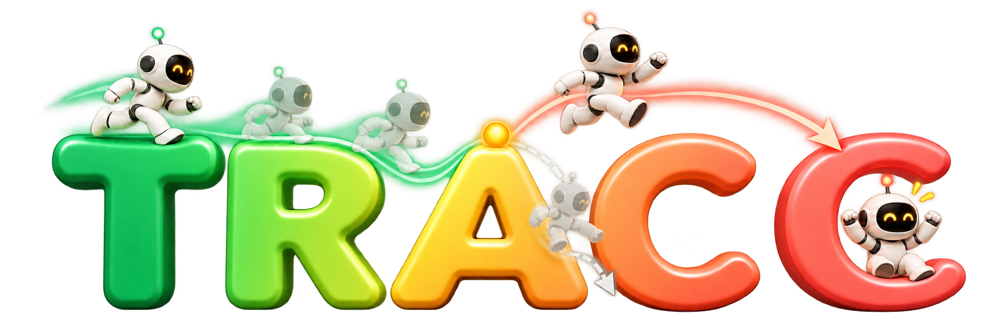

01
Box Jump
0:00

Learning humanoid skills from videos typically requires a successful human demonstration, which often demands custom data collection. Although failures have traditionally been treated only as negative examples in robot learning, they can still reveal a usable trajectory prefix before the task fails, as well as the intended outcome. To leverage this information from a failed-attempt video, we propose TRACC, a pipeline that imitates the useful portion of the motion trajectory and then completes the task based on the inferred task outcome. The usable motion prefix serves as prior knowledge until the failure occurs, after which the task-completion reward guides the policy to learn the intended task goal without requiring a successful task trajectory. We evaluate our method on six in-the-wild failed human tasks from the Oops! dataset. Our experimental results demonstrate the effectiveness of the proposed approach for learning from failed attempts when no successful demonstration is available. Thus, these findings establish failed human videos as a viable source of supervision for humanoid skill learning.
We treat a failed-attempt video sequence as a partial demonstration rather than a negative example. Given a failed attempt human video, we aim to learn a policy that reproduces the useful trajectory of the observed motion and completes the intended task.